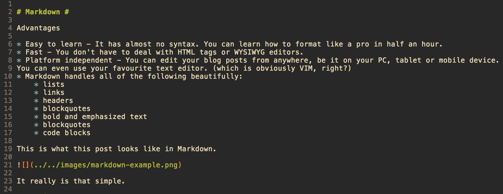

How to set up a Pelican blog with Github pages
I’ve been quite vocal about the benefits of blogging using Markdown, and using a static page generator with Pandoc instead of the conventional CMS. But a lot of people I’ve spoken to have expressed their doubts about the simplicity of the process. I figured if I could fit it in one blog post I could claim it were simple, right?
Markdown
Advantages
- Easy to learn - It has almost no syntax. You can learn how to format like a pro in half an hour.
- Fast - You don’t have to deal with HTML tags or WYSIWYG editors.
- Platform independent - You can edit your blog posts from anywhere, be it on your PC, tablet or mobile device. You can even use your favourite text editor. (which is obviously VIM, right?)
- Markdown handles all of the following beautifully:
- lists
- links
- headers
- blockquotes
- bold and emphasized text
- blockquotes
- code blocks
This is what this post looks like in Markdown.

It really is that simple.
Static pages
Advantages
- Fast - It loads extremely quickly.
- Portable - You can easily move from a server space and deploy it elsewhere.
- Cheaper - It is cost effective for a small website / personal blogs.
Disadvantages
- Typically required web development experience to make changes to website.
- Complicated and a lot of work when you have a lot of pages e.g. a personal blog.
Enter Github pages and Pelican
Github pages takes away from all the disadvantages of static pages, and adds a few pros as well. Version control was a big plus for me. And static site generators like Jekyll and Pelican make it extremely easy to create web content without any actual web development. I choose Pelican because it was Python based, and it seemed to have a good selection of themes.
Install required packages
pip install pelican
pip install markdown
pip install ghp-importghp-import is a cli that allows you to easily push your changes to your github repository
These are optional packages to install that may come in handy later
pip install Pillow beautifulsoup4 cssmin cssprefixer cssutils pretty six smartypants typogrify webassetsCreate a Github account and a User or Project page
Github pages has instructions on how to create a User or Project page, and will in fact walk you through the process. If you create a User page, your website will be live at $GHUSERNAME.github.io and a Project page will go up at $GHUSERNAME.github.io/$PROJECTNAME. The rest of this blog assumes you want to create a User page.
Create a directory for your website
Assuming $GHUSERNAME is your github username, run the following commands. You can rename the website
folder to anything you want.
git clone https://github.com/$GHUSERNAME/$GHUSERNAME.github.io/ website
cd websiteRun Pelican quickstart
pelican-quickstartThis is what you might get. Answer all the questions
➜ website pelican-quickstart
Welcome to pelican-quickstart v3.5.0.
This script will help you create a new Pelican-based website.
Please answer the following questions so this script can generate the files
needed by Pelican.
> Where do you want to create your new web site? [.]
> What will be the title of this web site? Dheepak Krishnamurthy
> Who will be the author of this web site? Dheepak Krishnamurthy
> What will be the default language of this web site? [en]
> Do you want to specify a URL prefix? e.g., https://example.com (Y/n) Y
> What is your URL prefix? (see above example; no trailing slash) https://kdheepak.com
> Do you want to enable article pagination? (Y/n) Y
> How many articles per page do you want? [10]
> Do you want to generate a Fabfile/Makefile to automate generation and publishing? (Y/n) Y
> Do you want an auto-reload & simpleHTTP script to assist with theme and site development? (Y/n) Y
> Do you want to upload your website using FTP? (y/N) N
> Do you want to upload your website using SSH? (y/N) N
> Do you want to upload your website using Dropbox? (y/N) N
> Do you want to upload your website using S3? (y/N) N
> Do you want to upload your website using Rackspace Cloud Files? (y/N) N
> Do you want to upload your website using GitHub Pages? (y/N) Y
> Is this your personal page (username.github.io)? (y/N) Y
Done. Your new project is available at /path/to/website
➜ websiteContent of your blog
Create an sample post.
vim content/example.mdType in the following and save it.
Title: My First Post
Date: 2015-11-23 10:20
Category: Example
Hello world.Type the following to convert all your markdown or ReST posts to HTML.
make htmlYou can also type the following to serve a local version of your site to view the output of your hardwork
make serveThis will be visible at localhost:8000 by default.
Push your content to Github
If you installed everything correctly, you can type the following to push your website to your Github repository. You need to have ghp-import installed for this to work.
make githubYou are done! If you have any questions regarding any of this, you can shoot me questions in the comments below.
Reuse
Citation
@online{krishnamurthy2015,
author = {Krishnamurthy, Dheepak},
title = {How to Set up a {Pelican} Blog with {Github} Pages},
date = {2015-05-03},
url = {https://kdheepak.com/blog/how-to-set-up-a-pelican-blog-with-github-pages},
langid = {en}
}